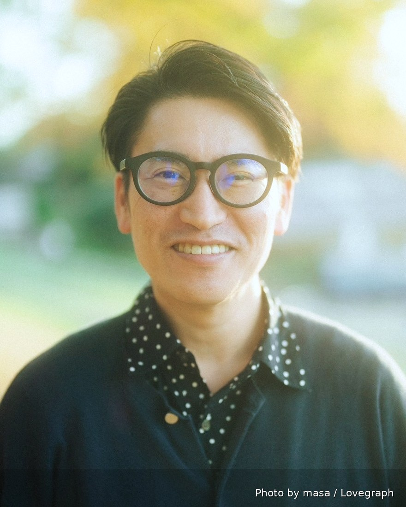

Founder
代表取締役 / Takato Yamaguchi
Biography

商社の財務・経営企画から、戦略コンサルティング、事業会社の部門責任者、投資ファンドでの投資業務、そして事業会社の代表取締役まで、立場を変えながら経営に関わってきました。分析する側と、分析結果を受けて実行する側の両方を経験していることが、いまの仕事の土台になっています。
PEファンドである株式会社刈田・アンド・カンパニーにプリンシパルとして参画したのち、その投資先である株式会社ROI（現・株式会社ファンくる）の代表取締役に就任しました。経営再建にあたったのち、ファンドMBOという形で自ら株主となり、事業成長までを執行しています。投資する側と、投資を受けて実行する側の両方に立った経験が、いまの仕事の基礎になっています。
多店舗サービス業の顧客評価データを日々扱う実務のなかで、単一のデータをいくら深く掘っても限界があること、性質の異なるデータを組み合わせて初めて業績を動かす要因が見えることに行き当たり、その分析手法を確立しました。
2026年8月、その手法を業種を問わず提供するために株式会社SynapXisを設立しました。あわせて株式会社ファンくるの特別顧問を務めています。
Speaking & Publications
外食、宿泊、小売、スポーツ、温浴など、業種を横断してデータ活用の実務を発信してきました。以下は株式会社ROI〜株式会社ファンくる代表取締役社長としての実績です。